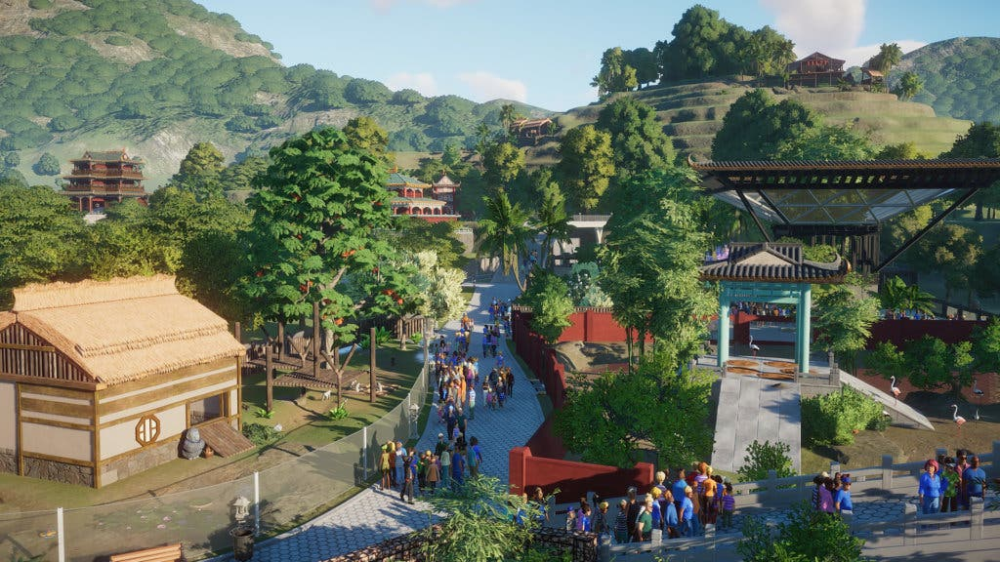
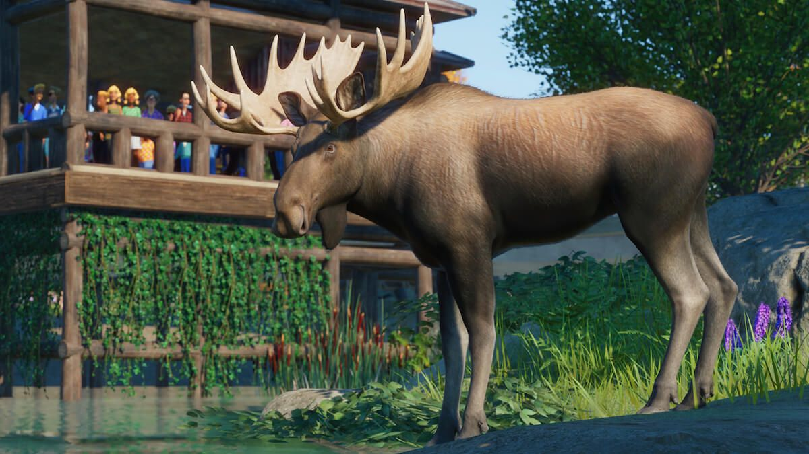

Información visitantes generalizada
Los visitantes son el mayor punto de ganancias en nuestro zoo, y por ello, debemos tratarlos con la mayor gentileza posible.
Debemos recordar, que este juego es bastante realista, y no solo afecta en los visitantes si los animales se encuentran en buen estado,
sino que también afecta las áreas de los trabajadores, la limpieza, las tiendas...
Por eso, hay que saber como tratar bien a los visitantes, y te lo explicaremos a continuación.

¿Como se tratan bien a los visitantes?
Si quieres que tus visitantes recorran determinadas areas del zoo usa letreros para señalar el camino,
son completamente gratuitos. Puedes incluso ser creativo y añadir tu propias imágenes a los carteleas. Alternativametne,
prueba a invertir en entradas adicionales. Si los visitantes entran desde diferentes sitios puedes distribuirlos mejor.
